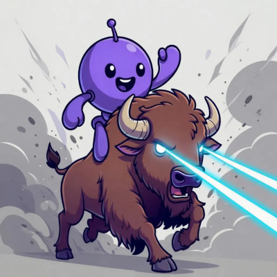
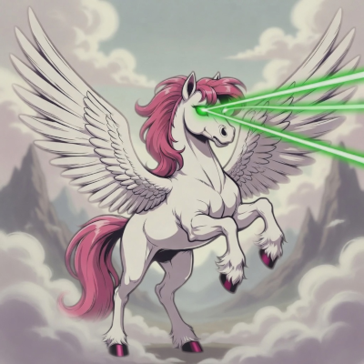
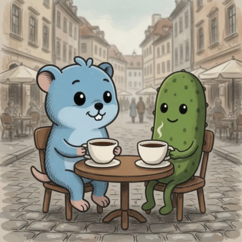

HTMX architecture reference
Server-authoritative architecture. Three stacks. One database.
FieldMark is a teaching-oriented reference implementation of a construction compliance system, built to test whether server-authoritative HTMX can deliver SPA-equivalent interactivity across realistic enterprise workflows in ASP.NET Core, Django, and Go/Fiber.
The thesis
You may not need an SPA for this class of product.
The point is not nostalgia for server rendering. The point is keeping business authority in one place while still delivering responsive product interactions.
SPAs have become the default answer for applications that are mostly request-response: forms, authorization checks, filtered lists, detail panes, audit logs, and state transitions. The cost shows up as duplicated validation, drift between client and server rules, and UI paths that have to reconstruct the same business decision twice.
FieldMark keeps the server authoritative without pretending the browser should be inert. HTMX handles targeted interactivity, AG Grid Enterprise runs as a focused JavaScript island for server-side row model data grids. SSRM keeps large-grid operations server-backed, so sorting, filtering, and row loading can stay aligned with authorization and domain rules. The enterprise build is used unlicensed here intentionally for demonstration only; production applications should pay the proper AG Grid Enterprise licensing fees.
The reference proves the idea by building one inspection and compliance domain three times. Routes, HTMX targets, AG Grid contracts, audit strings, and domain method names are treated as a parity contract; divergence is a defect.
Architecture visual
Parallel web stacks, one infrastructure-owned domain.
Each stack renders pages and HTMX partials against the same PostgreSQL domain schema. Authentication data stays isolated per ecosystem; domain user references remain opaque.
Architecture summary: the browser exchanges server-rendered HTML partials and JSON payloads with one of three server implementations: ASP.NET Core, Django, or Go/Fiber. Each server follows shared routes, HTMX targets, AG Grid contracts, and audit strings over one PostgreSQL domain schema.
HTMX swaps server-rendered fragments while JavaScript islands provide focused rich controls.
Razor Pages + EF Core
Templates + Django ORM
Fiber views + pgx SQL
The domain schema is owned by infrastructure SQL
init scripts, not by any single framework.
Stack comparison
Three implementations you can run and inspect.

ASP.NET Core driven hypermedia
Razor Pages + EF Core + HTMX, with symmetric route inventory and server-rendered partials.

Django driven hypermedia
Django Templates + Django ORM + HTMX, sharing the same target IDs and audit action vocabulary.

Go/Fiber driven hypermedia
Fiber + pgx + HTMX, using explicit SQL while preserving the same domain and interface contracts.
Technical matrix
The same app contract, compared side by side.
| Dimension | .NET | Django | Go |
|---|---|---|---|
| Runtime | .NET 10 | Python 3.14+ | Go 1.26+ |
| Web framework | ASP.NET Core Razor Pages | Django 6.x | Fiber v3 |
| Data access | EF Core 10 | Django ORM | pgx/v5 explicit SQL |
| Interactivity | HTMX 4.x | HTMX 4.x | HTMX 4.x |
| Data grids | AG Grid Enterprise 35.x , unlicensed demo use | AG Grid Enterprise 35.x , unlicensed demo use | AG Grid Enterprise 35.x , unlicensed demo use |
| Auth schema | dotnet_auth |
django_auth |
fiber_auth |
The domain
Inspection workflows with real state.
FieldMark is deliberately more than a todo list. It carries nested aggregates, compliance scoring, authorization, validation failures, and audit trails.
Explore the project
Read the thesis, run a stack, inspect the code.
FieldMark is a personal reference implementation for server-authoritative HTMX architecture. It is MIT licensed and shared publicly for anyone who wants to study, run, or adapt the patterns.